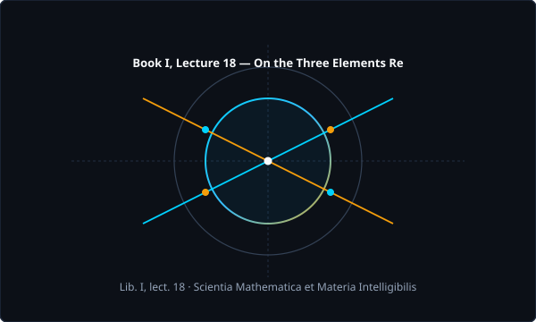

Book I, Lecture 18 — On the Three Elements Required in Every Demonstrative Science: Subject-Genus, Proper Attributes, and Common Axioms¶
Liber I, Lectio 18 — De tribus in omni scientia demonstrativa requisitis: genus subiectum, passiones et communes dignitates

[lib. 1 l. 18 n. 1] After he has shown that demonstration proceeds not from common principles alone, but from proper principles, here, in order to make clear what has preceded, he determines the nature of proper and common principles. And concerning this he does two things. First, he shows the necessity of this determination, saying that it is difficult to recognize whether we know from proper principles (which alone is truly to know scientifically) or not from proper principles. For many suppose themselves to know scientifically whenever they possess a syllogism drawn from certain premises that are true and primary. Yet this is not true; rather, in order for us to know scientifically, the principles must be proximate to the things that are to be demonstrated (which are here called primary, just as above they were called extremes), or else proximate to the first indemonstrable principles.
[lib. 1 l. 18 n. 2] Second, at Now I call principles, et cetera, he determines the nature of proper and common principles. And concerning this he does two things: first, he treats of proper and common principles; second, he shows how the demonstrative sciences stand in relation to principles of this sort, at That it is impossible, et cetera. Concerning the first he does two things: first, he distinguishes principles from non-principles; second, he distinguishes principles from one another, at Now among the things used, et cetera.
[lib. 1 l. 18 n. 3] Concerning the first he does two things. First, he shows what principles are, saying that the principles in each genus are those things which, though true, cannot be demonstrated—either unqualifiedly, if they are first principles, or at least not within that science in which they are assumed as principles. And he adds though true in order to distinguish them from falsehoods, which are not demonstrated in any science.
[lib. 1 l. 18 n. 4] Second, at Now what both the primary things, et cetera, he shows the agreement and the difference between principles and non-principles. For principles agree with non-principles in this, that concerning both one must assume, as it were by supposing, what they signify—both the primary things, that is, the principles, and the things derived from them, that is, the things proved from the principles: because the what-it-is belongs properly to the science that treats of substance, namely, first philosophy, from which all other sciences receive this. Yet principles and the things derived from principles differ in this, that concerning the principles one must assume by supposing that they are, whereas concerning the other things, which are derived from the principles, one must demonstrate that they are. Thus in mathematics one assumes by supposing both what the unit is, which is a principle, and what the straight is, and what the triangle is, which are not principles, but proper attributes; yet that the unit exists, or that magnitude exists, the mathematician assumes as principles, whereas he demonstrates the others, namely, the things derived from the principles—for he demonstrates the existence of the equilateral triangle, the right angle, and also that this line is straight.
[lib. 1 l. 18 n. 5] Next, when he says, Now among the things used, et cetera, he distinguishes principles from one another: and first, proper principles from common principles; second, common principles from one another, at Now neither is a hypothesis, et cetera. The first part is divided into two: in the first, he divides proper and common principles; in the second, he clarifies a point that could occasion doubt, at Yet nothing prevents certain sciences, et cetera.
[lib. 1 l. 18 n. 6] Concerning the first he does three things. First, he sets down the division, saying that of the principles we use in the demonstrative sciences, some are proper to each individual science, while others are common. And because this might appear contrary to what was shown above—namely, that the demonstrative sciences do not proceed from common principles—he therefore adds that common principles are assumed in each demonstrative science according to analogy, that is, insofar as they are proportioned to that science. And this is what he goes on to explain by adding that it is useful to assume principles of this sort in the sciences to the extent that they pertain to the subject-genus contained under that science.
[lib. 1 l. 18 n. 7] Second, at Proper principles are, et cetera, he gives examples of both, saying that proper principles are, for instance, that a line is of such a sort, or what the straight is—for the definition of both the subject and the proper attribute is held as a principle in the sciences. Common principles, on the other hand, are, for instance, If equals be subtracted from equals, the remainders are equal, and other common conceptions of the mind.
[lib. 1 l. 18 n. 8] Third, at Now it is sufficient, et cetera, he shows how the demonstrative sciences employ the aforesaid principles. And first, concerning the common principles, he says that it is sufficient to assume each of these common principles to the extent that it pertains to the subject-genus with which the science deals. For geometry will accomplish the very same thing if it does not assume the aforesaid common principle in its full generality, but only in magnitudes, and arithmetic in numbers alone. For geometry will be able to draw its conclusion just as well if it says, If equal magnitudes be subtracted from equal magnitudes, the remaining magnitudes are equal, as if it said, If equals be subtracted from equals, the remainders are equal. And the same must be said concerning numbers.
[lib. 1 l. 18 n. 9] Second, at Now proper principles are, et cetera, he shows how the demonstrative sciences employ proper principles, saying that proper principles are the things that are supposed to exist in the sciences—namely, the subjects concerning which the science investigates the attributes that belong to them per se. Thus arithmetic considers units, and geometry considers signs, that is, points and lines: for the aforesaid sciences suppose that these exist and that they are such and such—that is, they suppose concerning them both that they are and what they are. Concerning the proper attributes, however, the aforesaid sciences suppose what each signifies: thus arithmetic supposes what the even is, and what the odd is, or what a square or cubic number is; and geometry supposes what the rational is in lines—for a line is called rational concerning which we can reckon by reference to a given line, and every line commensurable with a given line is of this sort, whereas one not commensurable with it is called irrational or surd; similarly geometry supposes what the deflected or the curved is. Yet concerning all the aforesaid proper attributes, the aforesaid sciences demonstrate that they exist through the common principles and from those principles that have been demonstrated from them. And what has been said concerning geometry and arithmetic must also be understood concerning astronomy. For every demonstrative science is concerned with three things: one of which is the subject-genus, whose per se proper attributes are investigated; another is the common axioms (communes dignitates), from which as from primary premises it demonstrates; and the third is the proper attributes (passiones), concerning which each science assumes what they signify.
[lib. 1 l. 18 n. 10] Next, when he says, Yet nothing prevents certain sciences, et cetera, he clarifies something that might occasion doubt. For because he had said that sciences suppose concerning principles that they are, concerning proper attributes what they are, and concerning subjects both, someone might believe that explicit mention must always be made of all of these. Hence he removes this doubt, saying that nothing prevents certain sciences from passing over some of the aforesaid, that is, omitting express mention of them: as when a science makes no explicit mention of supposing that its subject-genus exists if its existence is manifest—since it is not equally manifest of all things that they exist, as for instance that number exists and that hot or cold exists, the one being close to reason, the other to sense. Similarly, certain sciences do not set down by express mention what their proper attributes signify; just as it is not always necessary for sciences to make explicit mention of the common principles, because they are already known. Nevertheless, the aforesaid three are by nature presupposed in every science.